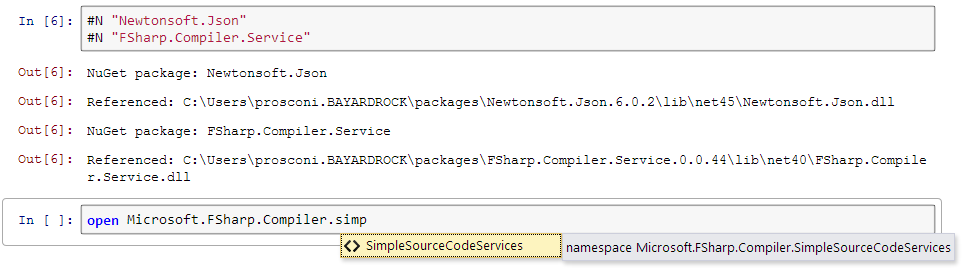

NuGet integration
IfSharp offers built-in NuGet integration by using preprocessor-like directives. Use the #N
directive to automatically download packages and reference them. Example: #N "Newtonsoft.Json".
This will get the latest version of the Newtonsoft.Json
package.

Specifying version and pre-release
The version can be specified by adding additional information to the string of the preprocessor directive.
The full format is as follows: #N "<packageName>[/<version>[/pre]]".
Version example: #N "Newtonsoft.Json/5.0.1". This will download version 5.0.1 of the Newtonsoft.Json package.
Prerelease example: #N "FSharp.Compiler.Service/0.0.1-beta/pre".
Not supported
Currently, dependencies are not automatically referenced, however they are downloaded.